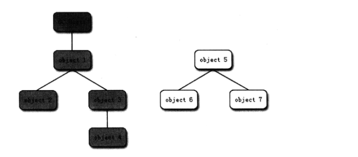
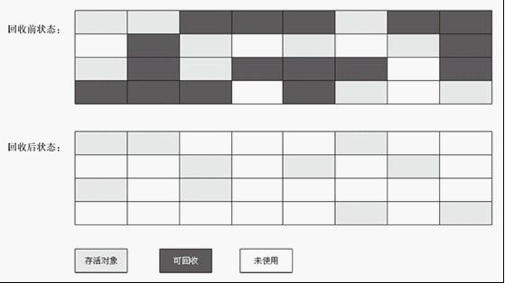
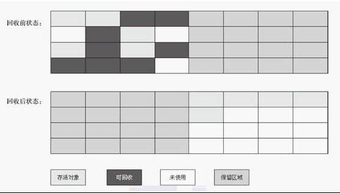
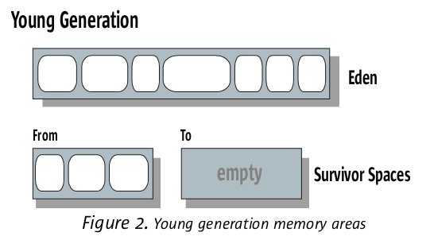
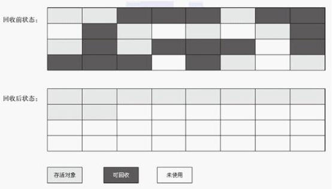

JVM垃圾回收机制
Java的垃圾回收（Garbage Collection, GC）机制一直面试最常见的问题，谈到垃圾回收，首先应该想到的就是三个大问题：
- 哪些内存需要回收
- 什么时候回收
- 如何回收
这里的GC算法主要指的是堆和方法区的GC算法，因为程序计数器、虚拟机栈、本地方法栈3个区域随线程而生，随线程而灭，它们内存区域应该分配多少内存在编译期间就已知，因此这3个区域的内存分配和回收都具备确定性，不需要复杂的GC算法，而堆和方法区直到程序运行时才能最终确定需要创建多少对象，因此内存的分配和回收都是动态的，所以需要设计比较高效的GC算法。
哪些内存需要回收
在堆里面存放着Java中几乎所有对象的实例，垃圾收集器在对堆中对象进行回收之前，需要首先判断哪些对象还存活着，哪些已经死去。
引用计数法
1给对象中添加一个引用计数器，每当有一个地方引用它时，计数值就加1；档引用失效时，计数值就减1；任何时刻计数器为0的对象就是不可能再被使用的这种方法简单高效，但是主流的Java虚拟机中普遍没有采用这种方法，因为他无法解决对象间相互循环引用的问题
123456ListNode a=new ListNode();ListNode b=new ListNode();a.next=b;b.next=a;a=null;b=null;在上面的代码中，对象a、b的next相互指向对方，除此之外再没有任何引用，实际上这两个对象已经不可能再被访问，然而如果采用引用计数法，两个对象的计数都不为0，因为他们互相指向对方，导致垃圾回收器无法回收他们。
可达性分析算法
1这个算法的基本思想就是通过一系列成为”GC Roots“的对象作为起始点，从这些节点开始向下搜索，搜索所走过的路径成为引用链，档一个对象到GC Roots没有任何引用链相连时，则证明此对象是不可用的。
例如上图所示，对象object5、object6、object7虽然互相有关联，但是他们到GC Roots是不可达的，所以他们将会被判定为是可回收的对象。
在主流的商用程序语言的主流实现中，都是采用可达性分析算法来判定对象是否存活的。
Java中，可以作为GC Roots的对象包括下面几种：
- 虚拟机栈（栈帧中的本地表量表）中引用的对象
- 方法区中类静态属性引用的对象
- 方法区中常量引用的对象
- 本地方法栈中JNI（Native方法）引用的对象
一个对象并不是被判定为不可达，就一定会被回收，因为它还会经历一个两次标记的过程：
第一次：判断为不可达后，会进行第一次标记，并进行筛选以判断该对象是否执行finalize()方法，筛选的条件是：
- 对象没有覆盖finalize()方法
- 该对象的finalize()方法已经被虚拟机调用过
这两种情况下，都不会再执行finalize()方法。
什么时候回收
比较常见的说法就是虚拟机会在系统空闲的时候进行垃圾回收，但这不够准确。其实上面时候进行回收确实是系统自身决定的，代码不可控制，System.gc()方法也仅仅是建议，但不一定会保证一定发生。
回答这个问题，一定要结合JVM堆内存的划分来回答，现在来回想一下堆内存的划分。
|
|
不同区域的垃圾回收频率和算法均不一样，因此，可以这样回答这个问题：
Java的GC分为两种：新生代GC和老年代GC：
- 新生代GC(Minor GC)：指发生在新生代的垃圾收集动作，因为这里面对象都是“朝生夕死”的，所以Minor GC非常频繁，一般回收速度也比较快。
- 老年代GC(Major GC/Full GC)：指发生在老年代的GC，出现Major GC经常会伴随至少一次的Minor GC(但不是绝对的)。
新生代GC
Eden区与Minor GC
大多数情况下，对象会在新生代的Eden区分配，当Eden没有足够的空间进行分配时，虚拟机将发起一次Minor GC。
老年代GC
执行Full GC由于消耗的资源比较大，所以会比较谨慎，在进行之前需要两次判断。
第一次判断：在发生Full GC之前，虚拟机会检查老年代最大可用连续空间是否大于新生代所有对象的总空间，如果大于，那么Minor GC可以安全执行，没有必要执行Full GC。
但是，如果不成立，那么就可能有必要执行一次Full GC以清除老年代的垃圾。
为什么说可能呢？因为虽然现在老年代无法容纳所有新生代的内存，但是大部分情况下新生代的内存都会被清理很多的，所以万一新生代需要进入老年代的内存只占其中一小部分呢，那么就不用执行Full GC了啊，当然，这在运行时无法确定，需要冒险。
第二次判断: 有一个参数HandlePromotionFailure的作用就是设置是不是要冒险，如果设置为可以冒险，那么会那么会继续检查老年代最大可用的连续空间，判断它是否大于历次晋升到老年代对象的平均大小，也就是大致评估一下这次冒险的成功率，如果如果大于，说明冒险的成功率比较高，那么就不会执行Full GC。
如果设置为不可以冒险，或者冒险的成功率比较低，那么久会老老实实的执行Full GC
最后，如果冒险失败，那么最后还是会进行Full GC
可以看出，虚拟机执行Full GC是非常谨慎的，不到万不得已绝不执行，就是因为这个过程非常浪费资源，Full GC的速度一般会比Minor GC慢10倍以上
如何回收
为了提高垃圾回收的效率，JVM细分为新生代和老年代，对不同的内存区域选用不同的GC算法，即所谓的分代收集算法。
新生代GC算法
标记清除算法
分为标记和清除两个阶段：首先标记出所有需要回收的对象，在标记完成后统一回收所有被标记的对象。

该算法的缺点是效率不高并且会产生不连续的内存碎片，所以GC基本不采用这种算法。
复制算法
把内存空间划为两个区域，每次只使用其中一个区域。垃圾回收时，遍历当前使用区域，把正在使用中的对象复制到另外一个区域中。次算法每次只处理正在使用中的对象，因此复制成本比较小，同时复制过去以后还能进行相应的内存整理，不会出现“碎片”问题。

优点：实现简单，运行高效
缺点：会浪费一块内存
然而，为什么现在的虚拟机都是采用这种复制算法来回收新生代的垃圾呢，因为新生代的对象中，大部分都是“朝生夕死”的。所以，并不需要按照1：1的（理论）比例来分配，而是将新生代继续划分为Eden区域和Survivor区域，划分比例为8:1:1（默认，其实可以调），如下图：

其中，Survivor区域被划分为Survivor1和Survivor2，也成为from区域和to区域。
当Eden区满执行GC的时候，将 Eden 区和 Survivor区中还存活着的对象一次性地复制到另一块Survivor(to)空间上，最后清理掉Eden和过程用过的Survivor(from)的空间。然后from和to对调，下次继续这样执行。
这样每次新生代中可用的内存空间是整个新生代的90%(Eden和一个Survivor， 80%+10%)，只用10%的内存被“浪费”。
老年代GC算法
老年代的对象存活时间比较长，对象存活率也比较高，如果老年代也采用复制算法进行老年代的GC，则要进行较多的复制操作，效率会变低。所以在老年代一般不采用这个算法。
根据老年代的特点，人们提出了“标记-整理”算法。过程与标记-清除算法一样，但后续步骤不是直接对可回收对象进行清理，而是让所有存活的对象都向一端移动，然后直接清理掉边界以外的内存。

解决完这垃圾回收的3个基本问题，就可以设计相应的垃圾收集器了，下面罗列一下JVM常用的垃圾收集器：
- Serial收集器：新生代收集器，使用复制算法，使用一个线程进行GC，串行，其它工作线程暂停。
- ParNew收集器：新生代收集器，使用复制算法，Serial收集器的多线程版，用多个线程进行GC，并行，其它工作线程暂停。使用-XX:+UseParNewGC开关来控制使用ParNew+Serial Old收集器组合收集内存；使用-XX:ParallelGCThreads来设置执行内存回收的线程数。
- Parallel Scavenge 收集器：吞吐量优先的垃圾回收器，作用在新生代，使用复制算法，关注CPU吞吐量，即运行用户代码的时间/总时间。使用-XX:+UseParallelGC开关控制使用Parallel Scavenge+Serial Old收集器组合回收垃圾。
- Serial Old收集器：老年代收集器，单线程收集器，串行，使用标记整理算法，使用单线程进行GC，其它工作线程暂停。
- Parallel Old收集器：吞吐量优先的垃圾回收器，作用在老年代，多线程，并行，多线程机制与Parallel Scavenge差不错，使用标记整理算法，在Parallel Old执行时，仍然需要暂停其它线程。
- CMS（Concurrent Mark Sweep）收集器：老年代收集器，致力于获取最短回收停顿时间（即缩短垃圾回收的时间），使用标记清除算法，多线程，优点是并发收集（用户线程可以和GC线程同时工作），停顿小。使用-XX:+UseConcMarkSweepGC进行ParNew+CMS+Serial Old进行内存回收，优先使用ParNew+CMS（原因见Full GC和并发垃圾回收一节），当用户线程内存不足时，采用备用方案Serial Old收集。
- G1(Garbage-First)收集器，当今最优秀的垃圾收集器，JDK1.7以上默认的垃圾收集器，面向服务端。